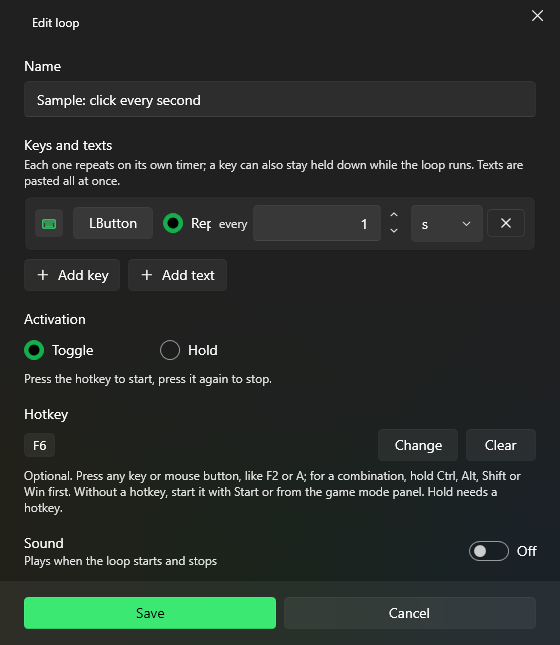
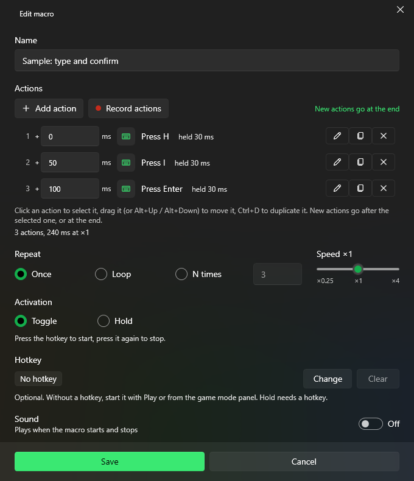

Guide
Everything PuppyMacro can do, page by page.
Install and update
- Download PuppyMacro-win-Setup.exe and run it.
- If Windows shows “Windows protected your PC”, select More info, then Run anyway. Releases are not code-signed yet.
- Setup installs PuppyMacro for your Windows user, without administrator rights, adds it to the Start menu and the desktop, and starts it. If the .NET 10 Desktop Runtime is missing, Setup installs it.
Updates
PuppyMacro checks for a new version when it starts and every 12 hours. When one is available, a bar appears at the top of the window and a dot appears on Settings. Select Update: running loops and macros stop, the new version downloads and PuppyMacro restarts. Later hides the bar until the next start; the dot stays until you update.
In Settings > Updates you can check now and turn off Check for updates automatically.
Uninstall
Windows Settings > Apps > Installed apps > PuppyMacro > Uninstall. This also removes the Start with Windows entry.
Loops
A loop repeats keys or texts until you stop it. Select Add loop on the Loops page.

- Keys and texts: each row repeats on its own timer, from 10 ms to 24 h.
- Add key: select the key button, then press any key or mouse button. Choose Repeat every N ms, s, min or h, or Hold down to keep it held while the loop runs.
- Add text: the text is pasted all at once, optionally with Press Enter before pasting and Press Enter after pasting. Your clipboard is restored afterwards.
- Activation: Toggle (press the hotkey to start, press it again to stop) or Hold (runs only while the hotkey is held down).
- Hotkey: optional. Select Change and press a key or mouse button; for a combination, hold Ctrl, Alt, Shift or Win first. Without a hotkey, start the loop with Start or from the game mode panel. Hold needs a hotkey.
- Sound: plays when the loop starts and stops.
On the Loops page, the switch on each loop enables or disables it, and the … menu has Edit, Move up, Move down and Delete. You can also drag loops to reorder them. Search and Filter by (All, Enabled, Disabled, Running) help with long lists.
Macros
A macro plays back a list of actions. Create one with Record macro or New macro on the Macros page.
Record
- Select Record macro. Choose whether to Record mouse movement.
- Select Start recording or press the Record hotkey (F8 by default). PuppyMacro hides; after a 3-second countdown, switch to the window to record. Clicks during the countdown are not recorded.
- Do what you want to repeat, then press the Record hotkey again or select Stop. The macro opens in the editor.
Edit

- Add action adds a step; Record actions records more steps and inserts them into the macro.
- Actions: Press key, Key down, Key up, Click (single or double), Mouse button down, Mouse button up, Move to (instantly or smoothly, with Pick on screen), Scroll, Paste text, and recorded mouse paths.
- Press key and Click can repeat a number of times, with a pause between.
- Select an action to edit it, drag it (or Alt+Up / Alt+Down) to move it, and press Ctrl+D to duplicate it. New actions go after the selected one, or at the end.
- Repeat: Once, Loop or N times. Speed: from ×0.25 to ×4.
- Activation, Hotkey and Sound work as for loops. Without a hotkey, start the macro with Play.
Remap
Press a key or mouse button and PuppyMacro sends another one instead. Remaps work while PuppyMacro is running, also in the system tray. Select Add remap on the Remap page.

- When I press: a key or mouse button.
- Send instead: a key, a mouse button or a combination (hold Ctrl, Alt, Shift or Win first).
- Works in: All apps, or A specific app: pick a running app or browse for its .exe. The remap works only while that app is in front.
- Left and right click can be remapped only for a specific app.
Game mode
Select Enable game mode or press F11. The main window hides and a small panel stays on top of your game, showing the enabled loops and macros.
- The panel never takes focus from the game. With Click items in the panel to start or stop them (Settings > Game mode panel, on by default), you can click loops and macros to start or stop them. Hold items stay hotkey only.
- In Settings > Game mode panel you can set the Opacity of the panel background and its Position. Position on screen shows the real panel: drag it, or nudge it with the arrow keys (Shift moves ×10), then press Enter.
- The panel is visible only in windowed fullscreen or borderless games, not in exclusive fullscreen.
Hotkeys
- Global hotkeys, changeable in Settings > Hotkeys: Stop all (F10) stops every running loop and macro, Game mode (F11) switches between the window and the in-game panel, Record (F8) starts a recording after you select Record macro, and stops it.
- A hotkey is a key or mouse button, optionally with Ctrl, Alt, Shift or Win. It matches exactly: F6 does not trigger on Ctrl+F6.
- Left and right click cannot be hotkeys, so PuppyMacro's window stays clickable.
- Hotkeys and remap source keys are not passed on to other apps.
System tray and startup
- With Close to system tray on (the default), closing the window keeps PuppyMacro running in the system tray, with hotkeys and remaps working. Right-click its icon for Open PuppyMacro, Stop all and Exit.
- Start with Windows starts PuppyMacro in the system tray when you sign in.
- Theme: System, Light or Dark.
Backup and your data
Loops, macros, remaps and settings are kept in %AppData%\PuppyMacro, so every new version finds them. In Settings > Backup:
- Export… saves everything to one
.puppymacrofile, to move it to another PC or keep a copy. - Import… replaces your loops, macros, remaps and settings with the ones in a file. Your current data is saved first as a backup in the data folder, then PuppyMacro restarts.
- Open data folder opens
%AppData%\PuppyMacro.
Good to know
- If the app you automate runs as administrator, run PuppyMacro as administrator too. Start with Windows cannot start it elevated.
- Mouse rows and macro clicks never click on PuppyMacro's own windows.
- Questions or problems: open an issue on GitHub.